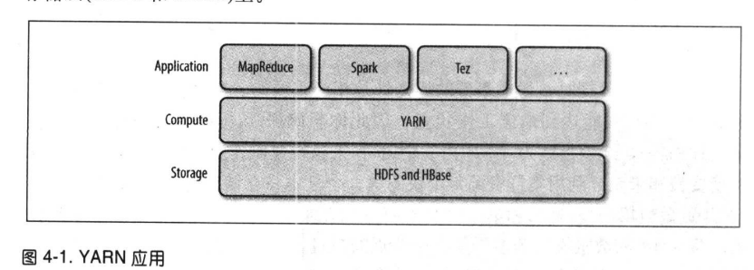
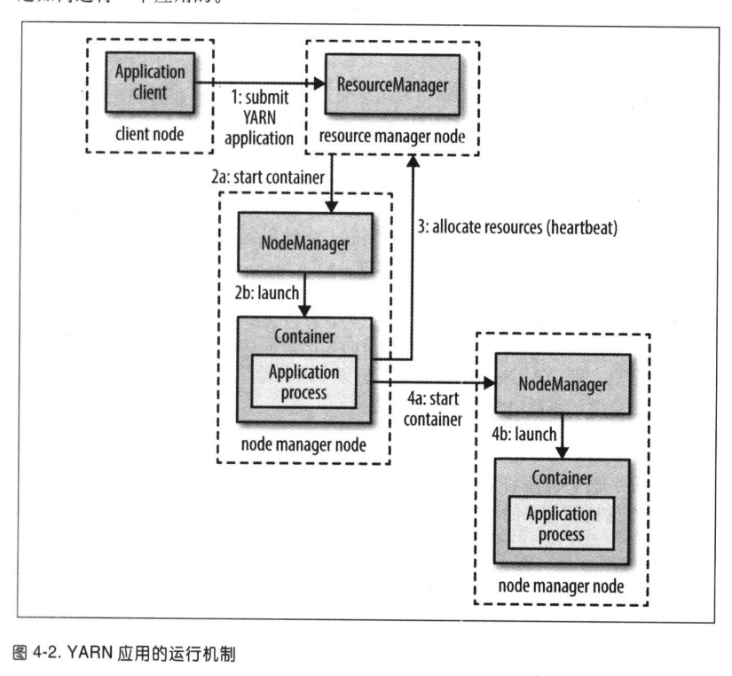

第4章关于YARN
简介
- hadoop集群资源管理系统
- 改善MapReduce
- 一般使用应用API，而非使用YARN的API
- 
剖析YARN应用运行机制
- 守护线程
- 资源管理器 管理集群资源
- 节点管理器 启动和监控容器
- 运行机制
- 客户端连接资源管理器 运行application master进程
- 资源管理找到并启动application master节点
- 利用本身计算/请求更多容器进行分布式计算
- 
- 资源请求
- 一般会尝试在数据副本节点请求
- 静态请求资源 Spark
- 动态请求资源
- 生命周期
- 一个作业对应一个应用
- 作业的每个工作流和每个用户对话对应一个应用 Spark
- 多个用户共享一个长期应用 Impala
Yarn与mapredu1
- MapReduce1
- 一个jobtracker 作业调度+任务进度监控+记录任务流水
- 多个tasktracker
- 每个tasktracker配置固定长度的slot
- 一个slot可以运行一个map/Reduce任务 资源大小不可分，造成浪费
- 利用率低
- jobtracker调度tasktracker协调和运行系统上的作业
- YARN
- 资源管理器+application master+时间轴管理器+节点管理器
- 多租户 可以运行不同版本的MapReduce
YARN中调度
- 概念
- 资源是有限的需要合理的分配
- YARN根据既定调度策略分配资源
- 根据主导资源进行公平性调度 资源度量的方式 默认情况不开启，只考虑内存
- 调度策略
- FIFO
- 将应用放入一个队列，按照提交的先后顺序运行
- 优点 简单易懂，不要任何配置
- 缺点 不适合共享集群 短任务可能会等待时间过长
- 容量调度器
- 每个队列预留资源 在队列中先来先服务
- 可以弹性队列
- 优点 短作业可以快速完成
- 缺点 资源不能全部利用

- 公平调度器